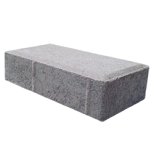
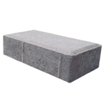

Keunggulan Batako, Paving Block & Grass Block
Mutu Produk
Terjamin
Produk
Presisi
Tahan Berbagai
Kondisi Cuaca
Ramah
lingkungan
EcoBrick adalah batako, paving block dan grass block berkualitas SNI yang cocok digunakan untuk berbagai kebutuhan kontruksi dinding, jalan, dan taman.
Mutu Produk
Terjamin
Produk
Presisi
Tahan Berbagai
Kondisi Cuaca
Ramah
lingkungan
Ecobrick Batako merupakan bahan penyusun dinding pengganti bata yang ramah lingkungan karena menggunakan bahan Green Product dan berkualitas tinggi yang cocok untuk digunakan sebagai kebutuhan konstruksi bangunan gedung seperti rumah.

Ecobrick Paving Block merupakan produk konstruksi yang menggunakan bahan ramah lingkungan dan berkualitas tinggi sehingga cocok untuk digunakan pada konstruksi jalan seperti halaman rumah, garasi, perkerasan jalan, trotoar dan lain-lain.
 

EcoBrick Grass Block merupakan produk konstruksi yang berfungsi untuk perkerasan jalan, area parkir, dan taman yang memiliki rongga untuk dapat ditanami rumput.